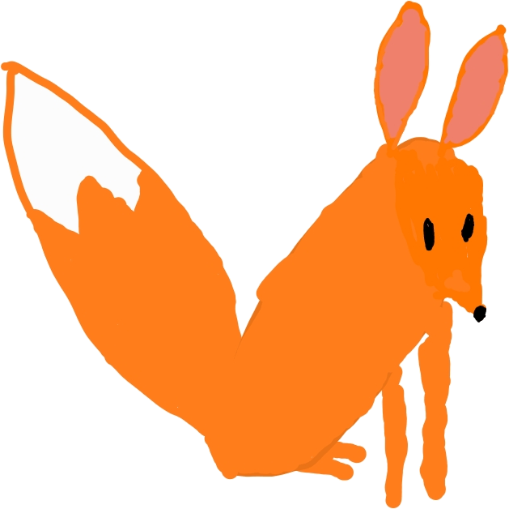

Fennec Programming Language
Fennec is an experimental programming language and environment, currently in development.
Fennec emphasizes:
-
simplicity, in both the language and the programs that it guides you to write
-
interactivity: instant feedback on any code change
-
reliability, through static checks and automatic testing
-
efficiency: control over data layout and absence of wasteful computation
GitHub repository